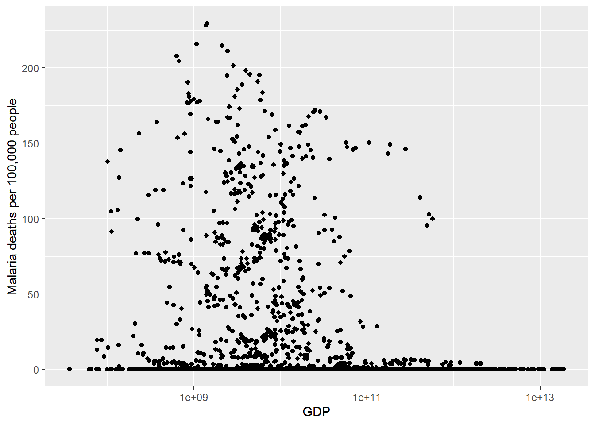

Rows: 508 Columns: 4
── Column specification ────────────────────────────────────────────────────────
Delimiter: ","
chr (2): Entity, Code
dbl (2): Year, Incidence of malaria (per 1,000 population at risk) (per 1,00...
ℹ Use `spec()` to retrieve the full column specification for this data.
ℹ Specify the column types or set `show_col_types = FALSE` to quiet this message.
Rows: 6156 Columns: 4
── Column specification ────────────────────────────────────────────────────────
Delimiter: ","
chr (2): Entity, Code
dbl (2): Year, Deaths - Malaria - Sex: Both - Age: Age-standardized (Rate) (...
ℹ Use `spec()` to retrieve the full column specification for this data.
ℹ Specify the column types or set `show_col_types = FALSE` to quiet this message.
mix_mal <- mal_death%>%left_join(m_cases)
Joining with `by = join_by(Entity, Code, Year)`
joined deaths and cases of malaria.
gdp <-read_csv("https://raw.githubusercontent.com/twig40k/BioStatisticsAnalysis/refs/heads/main/flat-ui__data-Thu%20Jan%2030%202025.csv")
Rows: 7582 Columns: 4
── Column specification ────────────────────────────────────────────────────────
Delimiter: ","
chr (2): Country Name, Country Code
dbl (2): Year, Value
ℹ Use `spec()` to retrieve the full column specification for this data.
ℹ Specify the column types or set `show_col_types = FALSE` to quiet this message.
data sourced from the World Bank via https://datahub.io/core/gdp
# A tibble: 3,078 × 6
Entity Code Year Malaria deaths per 1…¹ Malaria cases per 1,…² GDP
<chr> <chr> <dbl> <dbl> <dbl> <dbl>
1 Southern … <NA> 2000 0.0109 NA NA
2 Honduras HND 2016 0.369 NA 2.17e10
3 Zimbabwe ZWE 2009 10.1 NA 9.67e 9
4 United Ar… ARE 1994 0.0278 NA 5.93e10
5 Lebanon LBN 2016 0 NA 5.11e10
6 Burundi BDI 2004 144. NA 9.15e 8
7 Sweden SWE 1993 0 NA 2.13e11
8 Montenegro MNE 1998 0 NA 8.54e 8
9 Guyana GUY 2014 1.81 NA 4.13e 9
10 Mozambique MOZ 1993 153. NA 2.88e 9
# ℹ 3,068 more rows
# ℹ abbreviated names: ¹`Malaria deaths per 100,000 people`,
# ²`Malaria cases per 1,000 at risk people`
How do malaria deaths change over time? What year had the highest death rate of malaria?
death_mean <- exploratory_data%>%group_by(Year)%>%summarise(mean(`Malaria deaths per 100,000 people`))death_mean%>%ggplot()+geom_point(mapping =aes(x= Year, y =`mean(\`Malaria deaths per 100,000 people\`)`))+labs(title ="Average malaria death per year")
This graph shows the average malaria deaths per year from the exploritory data.
What is the relationship between gdp and malaria deaths?
exploratory_data%>%ggplot()+geom_point(mapping =aes(y=`Malaria deaths per 100,000 people`, x = GDP))+scale_x_log10()
Warning: Removed 919 rows containing missing values or values outside the scale range
(`geom_point()`).

This graph shows malaria deaths and GDP. The x axis is scaled by log10 in order to show any definition. While it is difficult to make any conclusions based on this graph it does show that after 1e+11 GDP the odds of malaria deaths decreses signifigantly.
Does gdp impact the relation between deaths and cases?
exploratory_data%>%ggplot()+geom_point(mapping =aes(x= GDP, y=`Malaria cases per 1,000 at risk people`))+scale_x_log10()
Warning: Removed 2918 rows containing missing values or values outside the scale range
(`geom_point()`).
This one shows the graph of cases by gdp with the same scale as previously.
exploratory_data%>%ggplot()+geom_point(mapping =aes(y=`Malaria deaths per 100,000 people`, x = GDP, color ="blue"))+geom_point(mapping =aes(x= GDP, y=`Malaria cases per 1,000 at risk people`, color ="red"))+scale_x_log10()
Warning: Removed 919 rows containing missing values or values outside the scale range
(`geom_point()`).
Warning: Removed 2918 rows containing missing values or values outside the scale range
(`geom_point()`).
Hypothesis Cases of malaria will decrease on average over the years. 2000 will have the most cases of malaria.